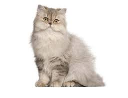

Eigenschappen
Andere naam: Iraanse kat
Gewicht: 6-7 kg.
Karakter: rustig, lief en vriendelijk
Kleuren: zwart, wit, rood en blauw zijn, ook bruin (chocolate), taubengrau (lila) en crème komt voor
ongeveer levensduur: ~14 jaren

terug naar rassen